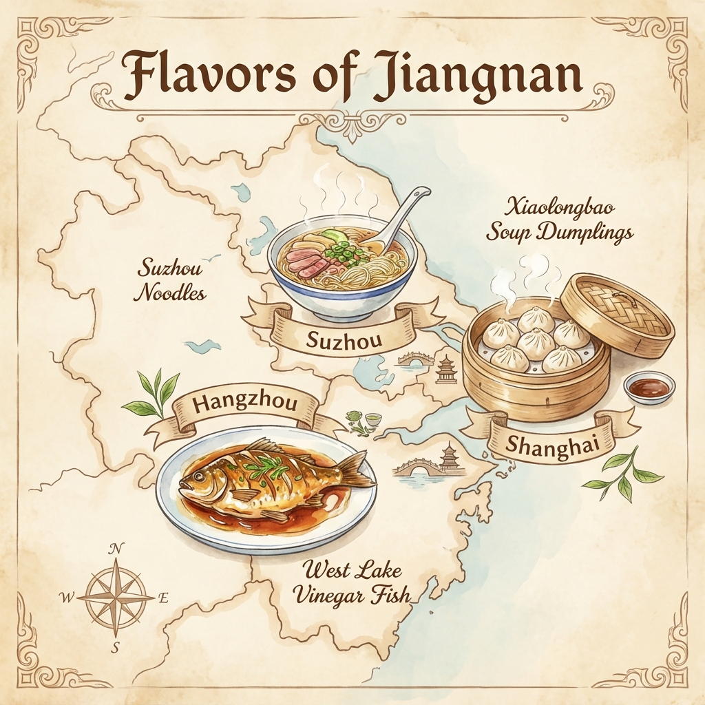

Hangzhou Local Specialties

Signature dishes of the Jiangnan region
Must-try dishes unique to the region:
West Lake Fish
西湖醋鱼
Hangzhou's signature dish - grass carp in a sweet and tangy vinegar sauce
Dragon Well Tea
龙井茶
Premium green tea from the famous Longjing village
Shrimp with Tea
龙井虾仁
Delicate shrimp stir-fried with fragrant Longjing tea leaves
Dongpo Pork
东坡肉
Slow-braised pork belly named after poet Su Dongpo
Hangzhou 杭州
📅 Dec 25-27 • 2 nights
🏛️ Louwailou (楼外楼)
Since 1848 | Lakeside location
Hangzhou's most famous restaurant for traditional cuisine. Stunning West Lake views.
Famous for 西湖醋鱼
Hangzhou's most famous restaurant for traditional cuisine. Stunning West Lake views.
Famous for 西湖醋鱼
👴 Zhi Wei Guan (知味观)
Since 1913 | Classic casual
Authentic local dishes and dim sum. Best for breakfast and casual dining.
Authentic local dishes and dim sum. Best for breakfast and casual dining.
✨ 28 HuBin Restaurant
Grand Hyatt | Fine dining
Modern Chinese cuisine with panoramic West Lake views. Impeccable service.
Modern Chinese cuisine with panoramic West Lake views. Impeccable service.
⭐ Jin Sha Restaurant
Four Seasons | Upscale
Signature restaurant with traditional Hangzhou dishes prepared by master chefs.
Signature restaurant with traditional Hangzhou dishes prepared by master chefs.
Suzhou 苏州
📅 Dec 29 • 1 night
🍜 Songhelou (松鹤楼)
Since 1757 | Historic
Famous for squirrel fish (松鼠鳜鱼) and traditional Suzhou noodles.
Famous for squirrel fish (松鼠鳜鱼) and traditional Suzhou noodles.
🏮 Pingjiang Road Eateries
Historic district | Various
Sample local snacks while strolling the ancient canal-side street.
Sample local snacks while strolling the ancient canal-side street.
🍴 De Yue Lou (得月楼)
Since 1688 | Traditional
Authentic Suzhou flavors and seasonal specialties in elegant setting.
Authentic Suzhou flavors and seasonal specialties in elegant setting.
🥟 Local Noodle Shops
苏式面 | Casual
Try Suzhou-style noodles with various toppings - a local breakfast tradition.
Try Suzhou-style noodles with various toppings - a local breakfast tradition.
Shanghai 上海
📅 Dec 30 - Jan 2 • 3 nights • NYE Celebration!
🥂 NYE Bund Dining
New Year's Eve Special
Premium restaurants along the Bund with spectacular skyline views for countdown. Book early for NYE!
Premium restaurants along the Bund with spectacular skyline views for countdown. Book early for NYE!
🥟 Nanxiang Mantou
Yu Garden | Institution
The original xiaolongbao (soup dumplings) shop. Long queues but worth it!
The original xiaolongbao (soup dumplings) shop. Long queues but worth it!
🍃 French Concession Cafes
Trendy district | Modern
Trendy restaurants and cafes for modern Shanghai dining experience.
Trendy restaurants and cafes for modern Shanghai dining experience.
🌆 Pudong Rooftops
Skyscraper views | Upscale
Dining with views from Shanghai's iconic towers. Perfect for NYE celebration.
Dining with views from Shanghai's iconic towers. Perfect for NYE celebration.
Guangzhou 广州
📅 Jan 3 • Layover stop • Birthplace of Dim Sum!
☕ Morning Dim Sum (早茶)
Don't miss! | 6-10 AM
Traditional Cantonese breakfast - tea and dozens of small dishes. Best experience: 6-8 AM with locals
Traditional Cantonese breakfast - tea and dozens of small dishes. Best experience: 6-8 AM with locals
👑 Tao Tao Ju (陶陶居)
Since 1880 | Legendary
Famous for dim sum and roasted meats. A Guangzhou institution.
Famous for dim sum and roasted meats. A Guangzhou institution.
🏪 Guangzhou Restaurant
广州酒家 | Since 1935
Famous for roasted duck, soy sauce chicken, and authentic dim sum.
Famous for roasted duck, soy sauce chicken, and authentic dim sum.
⭐ Diandude (点都德)
Modern chain | Popular
Affordable, high-quality dim sum. Clean and efficient service.
Affordable, high-quality dim sum. Clean and efficient service.
Dining Tips & Etiquette
✅ Essential Tips for Dining in China
- Reservations: Book popular restaurants in advance, especially for NYE in Shanghai
- Payment: WeChat Pay/Alipay accepted everywhere; cash at smaller establishments
- Translation: Bring a translation app for menu reading (Google Translate camera mode)
- Tipping: Not customary in mainland China - may even be refused
- Hours: Lunch 11-2 PM, Dinner 5-9 PM. Dim sum starts as early as 6 AM!
- Local crowds: Eat where locals eat for authentic, better-value meals
- Tea culture: Hot water/tea is standard - request cold drinks if needed
- Sharing: Chinese dining is communal - dishes are shared family-style